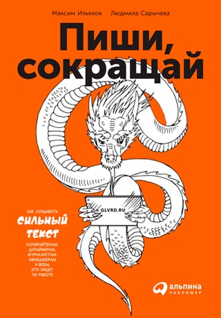
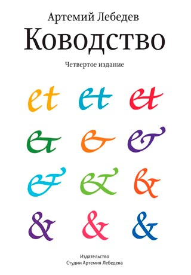
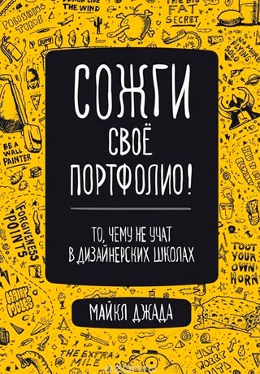

 Сссылка на книгу
Сссылка на книгу
Ководство
Артемий Лебедев
Хорошего дизайнера хвалят, но он равнодушен к этому. Хвалят-то не за то. И ругают тоже не за то. Молодой дизайнер, впервые столкнувшийся с тем, что его обругали не за дело, как бы обращается к заказчику: Я НЕ МИЛ ТЕБЕ
Бывалый дизайнер произносит эту же фразу, только наоборот.

Сссылка на книгу
Сожги свое портфолио
Майкл Джада
Иногда я в шутку говорю своим коллегам «Если клиент потребует, мы будем чистить их сортиры». Это шутка, но на самом деле я бы так поступил. Я не гордый.
Что всё это значит?
Томас Нагель
Некоторые полагают, что в полном смысле нам совершенно невозможно сделать что-нибудь иное, чем то, что мы делаем на самом деле